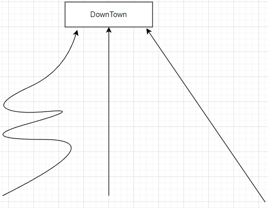

0-0.剖析数据结构的含义，数据结构的用途，区分数据结构与算法
- 什么是数据结构？
数据结构（英语：data structure）是计算机中存储，组织数据的方式。
总的来说就是（1）数据的（2）存储与（3）组织。
- 分别解释其含义？
1）数据：比如我们的QQ号，微信ID，支付密码了；这些都叫数据；
2）存储：以何种方式存放数据，链表，数组，树，图。。。
3）组织：CRUD增删改查；
线性表就是数组，国际上没有线性表这个词，是我们直译过来的；线性表直接用Array数组表达就好。
- 数据结构与算法的关系？
他们是独立的关系，不是学数据结构我就要一定会算法，这是我国的教育方式罢了；算法只是研究组织数据结构最优的CRUD解。它是更好的，更有效地对数据存储。
1-0.内存，内存是如何保存不同数据类型的
1)数据在内存中存储应该是什么样的？
内存条中像图中的每一个单元格都是有自己的地址，一个格子可以是一个字节，那么如果要存取一个大型数据(比如一个4字节的数据)，就必须存储在连续的单元格。

拿int（占用4个字节）举例，有数组 int arr[1,2];
假如1号单元格已被占用，那么，如果我们存储数组中的1，就必须重新分配一个连续的空间，比如2，3，4，5；
生活中的例子：
住院部，几个病人要求住在连续序号的房间中；
1-1.int类型的范围是如何计算的？为什么会占用四个字节？四个字节为什么可以表示该范围？内存中是怎样的
语言不重要。
1)在c/c++中：
不同的编程语言中取值范围是不同的。在c/c++语言中int范围取决于字长。 字长是计算机处理的最大位数，与cpu有关。所以了，在32位机器上，字长就是32位，此时表示范围：2^32。
考虑正负号(有符号位):表示范围为-(231)(231)-1(2^32)-1
不考虑正负号( 无符号位):表示范围为 0
2）python：
python中int范围表示是无限的。
2-0.Computational Analysis of algorithms计算机算法复杂度分析的基本含义
引出时间复杂度与空间复杂度。
以从不同的目的地去往市中心为例子,如下图：

去往市中心（downtown）有三个地点（a,b,c），从图中看出三地路程不尽相同。
而去往downtown的快慢取决于路的远近和所使用的交通工具。现在呢，从a,b,c地都有人出发去往市中心，a地乘客使用飞机，b地乘客使用拖拉机，c地乘客使用汽车。最终，a先到达，b最后到达。从这个例子中我们发现，不是路程近就能先到达，它与两个因素都有关。计算机同理。
在计算机中我们可以把路程比作空间复杂度，所使用的交通工具比作时间复杂度。我们通常所说的时间复杂度是使用相同计算能力的机器，考虑如何在更短的时间能够完成任务。
在计算机中，空间复杂度难以度量。
3-0.Big O notation复杂度标记符以及举例
1）该如何理解这些复杂度的数值？
以数组为例
O(1) 查找某个病房的住的是谁
O(n)医生早上查病房，每个病人都要去看一遍
O(n^2)每个对象与所有对象依次配对 ；
3-1.复杂度对比函数图

3-2.最基础的对数复习。
1）什么是对数?
对于指数：2^3=8 ,对数就是问 2的几次方=8 。答案是3。
2)介绍log2n的含义，为什么它的值越来越平滑？
从上节图中可以发现问题，为什么logn越的值来越平滑？
举个数组扩容例子。
如下数组：
int arr[1];
int arr[1，2];
int arr[1，2，3，4];
int arr[1，2，3，4，5，6，7，8];
int arr[1，2，3，4，5，6，7，8，9，10，11，12，13，14，15，16];
我们现在需要做的事情是：如果我该数组已经使用完，而我还需要在该数组存放元素，那么我就需要先把该数组扩容为原来的1倍。然后接着在数组中存放元素，如果我又用完了，我就接着扩容。一直如此。
对于上述数组：
要变做int arr[1，2];则是在int arr[1]基础上扩容一倍；
要变做int arr[1，2，3，4];则是在int arr[1，2]基础上扩容一倍；
…
上述数组长度变化：1->2->4->8->16->32->64…->2^N。
长度为1的数组，经过n次不断的扩容，数组会变得会变得非常大。而随后的每次扩容出来的值会更大，你一下子也很难用完，想再去扩容也会变得很慢，所以这个值会很平缓。
4-0.Array
提及国内翻译错误？
国际上没有线性表( Linear list )这个概念；
Linear list 就是Array 和Linked list，而不是线性表，直接说成数组和链表
如何理解数组在内存中的存储以及如何找到想要的指定元素位置？
我们要存储数组 int arr[1,2,3,4]；
前提：首先呢 ，在内存中1号位置已经被占用，那么现在我们要存储该数组中的四个元素，需要怎么存储呢。
首先我们每一个格子是一个字节，而数组中的每一个整形数据都为4个字节，那么数组中4个元素 则需要 4*4=16个字节，而一号位置已经被占用，则从2号位置开始放 这些元素，存放完这些元素要到17号停止。
那么我们要访问指定元素（下标为n所在位置的元素值），只需要套用如下公式，首地址+sizeof（数据长度）*n。
比如3号元素 ： 2+4*3 = 14，那么3号位置的元素就是从14号开始的。
4-1.Static Array 复杂度分析
1）查早与修改时间复杂度？
通过四则运算就能够找到对应下标，然后修改对应的值即可。
时间复杂度：O (1) T
2）插入考虑 RAM的随机性？在首中尾位插入？时间复杂度？
你想在首部，中部，和尾部直接插入元素有没有考虑到该数组周围已经被占用了。所以你只能重新找一片新的空间，复制原来的元素再加上新元素。copy的复杂度为O(n),而插入新元素时间复杂度为O（1），总的时间复杂度为O(n+1)，化简得O(n);
为什么1可以忽略掉？ 那假如O(n^2+2n)，2n可以忽略掉吗？
当数据量特别大得时候，比如100万，它的平方和乘2倍，哪个大？
相对于n^2而言，2n小的可怜，所以我们可以把它化简掉。就像你都已经欠债100万元，还在乎再欠上100块？
3）删除得时间复杂度？在数组首，尾，中 ，删除有区别吗？
首先先给出结论。删除数组首，中间的元素时间复杂度是O(n)T，删除末尾是O(1)T。
为什么？
首地址不能变，且数组的元素必须连续。所以要删除第一个元素，或者中间的某个元素只能把后面的元素在复盖到前一位来。
在末尾直接删除，首地址没有变，且删除后剩余数组元素是连续的。
假如要多次删除首元素，时间复杂度有多高？我们使用它是不是有点蠢？
假如n个元素，要删除n次，第一个元素，则时间复杂度为O(n*n)。
解决办法：
面试题：jvm中的mark and —sweep（标记and清除） 。 就是先把要删除的都先标记，再后统一把后面的往前移。时间复杂度为O(n)
4-2.Dynamic Array扩容复杂度分析，剖析高级语言中的ArrayList原理，提及复杂度震荡的情况
1)动态数组就是抢先分配，提前分配出1倍的空间。
2)扩容复杂度为什么是O(n),谈谈高数中的级数收敛？
比如数组int arr[1];
现在数组要变成 ：
int arr[1，2];
int arr[1，2，3，4];
int arr[1，2，3，4，5，6，7，8];
int arr[1，2，3，4，5，6，7，8，9，10，11，12，13，14，15，16];
要变做int arr[1，2];则是在int arr[1]基础上扩容一倍；
要变做int arr[1，2，3，4];则是在int arr[1，2]基础上扩容一倍；
对于元素3，插入1，2元素的时间复杂度都为O(1),而3，是在原来元素基础上扩容出来一倍，然后再插入3这个元素，在这时它的时间复杂度为O(n+1)为O(n),而4这个元素再插入时时间复杂度为O(1)，因为4这个元素的空间已经是扩容出来的。
所以上述不断地扩容时间复杂度为
O(1)+O(2)+O(4)+ O(8)+O(16)+O(32)+…+O(n)=O(2n)化简为O(n)
计算用到高数中的级数收敛：N+N/2+N/4+N/8+N/16+N/32+…1 约等于2N
上述方法有个装逼的词语？
平摊分析。维基百科搜索平摊分析，里面有对数组平摊分析的介绍。
缩容分析？
5-0.Linked list与Singly linked list含义以及复杂度分析举例
用解密游戏理解单链表。拿到每个地方的道具，同时哪里还存储着下个存储宝藏所在地的信息。
什么是头节点，节点？
单链表的时间复杂度
查：从第一个开始遍历，直到找到你要的值O(n)
插入：从头开始遍历，找到要插入的元素位置；
先查找，再插入 O(n)+O(1) =O(n)
修改：从头开始遍历，找到要修改的元素位置
先查找，再插入 O(n)+O(1) =O(n)
删除：从头开始遍历，找到要删除的元素位置
先查找，再插入 O(n)+O(1) =O(n)
再尾节点留空，备胎。有的节点也是指向最后一个元素的，这样插入时时间复杂度为O(1)。
数据结构离不开内存的
5-1.Doubly linked list与Circular linked list含义以及复杂度分析举例
1 双链表
双链表，杂交 ，每个节点有3个块：pre val next；
双链表时间复杂度，头尾O(1),中间O(n)
2循环列表
循环列表 ，对于单链表，尾部指针指向头节点。
对于双链表，头pre指向尾，尾next指向头节点。
其时间复杂度和双链表一样。
5-2.举例以及题外话
单链表：学生报名，派对人来的顺序。
双向链表：浏览器上面标签栏快进，后退。
6-0.Hash
1）散列算法，哈希函数？
这两个词语是一个意思。这是把一样东西通过函数计算得到另一样东西过程。把明文加密的过程叫做hash function哈希函数，比如八路军过城门检查。
2）什么哈希碰撞？有什么例子？
通过某种验证方式是得到你的哈希值和已有的哈希值一样。
例子：就像人在囧途 两人票一样，身份证一样，特工伪装完一样的这种感觉。
3）单向散列函数？应用？
明文加密得到密文，但是把你不能通过计算用密文得到我的明文。
应用1：网盘秒上传功能。你的文件要上传，网盘会拿你的该文件的哈希值，通过某种函数与服务器上存储的哈希值匹配，如果碰撞上，证明你的文件我的服务器上也存在，这时候我只需要复制一份文件的地址给你就欧克了。
应用2：苹果验证sha验证下载的文件是不是正版；
6-1.Hash Table或Hash Map的原理与复杂度分析
1）什么是哈希表？<key,value>？发生哈希碰撞咋办？
hash table and hash map是一个东西。把key通过哈希函数计算得到一个内存地址，再把value放到该地址中。这种设计就是哈希表。如果两个key计算得到的内存地址一样，那么可以用拉链法，再哪个地址中存一个链表的首地址。而链表的每一个节点有两部分。一个放value，一个放key的地址。
2）哈希表时间复杂度？
平均O(1)
最差O(n) ，因为发生哈希碰撞，可能要以链表的形式存储。
3）扩展？
理解编程语言中hash table的实现，java，python，js。。。。
7-0.Stack堆栈原理的实际用途与时间复杂度分析
1）栈？堆栈？
一个东西，push与pop不就是堆叠的过程。
什么是栈？打工刷盘子就能理解？
你去打工，你是洗盘子的，服务员是取盘子用的。
用途？
剪贴板，撤销，浏览器的历史记录；
栈的时间复杂度？
push O(1)
pop O(1)
查看（peek）某个元素 栈顶O( 1) ,剩余的元素O(n)
8-0.Queue原理实际应用与时间复杂度分析
1）队列？取票？（FIFO）
队列，就是元素先来先操作，后来后操作。
比如你去排队取你的火车票，你排在最前面，工作人员肯定先给你办理，你来的最晚，那你就排在最后面慢慢等着。
2）用什么实现？空间复杂度？时间复杂度？
空间复杂度为O(n);
链表：删除，插入时间复杂度为 o(1)
查找：O(n)
数组：查找O(1)，增加O(1),删除O(n)
3)应用
在系统中应用广泛。
比如计算机网络中的缓存网络数据包，我们电脑中后台进程管理。
4)思考最差和平均的出现？！！！！！
我觉得是所操作元素的位置决定，而不是所用的是链表还是数组的原因。
9-0.Tree树的含义以及术语
1)什么是树？
树就是我们的家谱。
2)理解什么是节点，根节点，子节点，叶子节点，兄弟节点，子树，边，高度，深度？等级？
节点：家谱中的所展现的每个人；
根节点：最上面的人，你的太上老爷这种感觉；
子节点：根下面的都是子节点，或者是相对于你爸爸，你就是子节点；
兄弟节点：一个爹生下来的孩子，是兄弟；
子树：族谱中你爸爸和及它的孩子们就相当于一个子树；
高度：假如你是你们家族最新的一代人，相对于你（叶子节点）而言，上面还有几代人；
深度：上帝视角，别人看你家族谱，嗯~你家有n代人（包括你这代）；
等级：家谱中的每代人；
9-1.Tree的应用
树就是用来表示层级关系的；
例子：
1 | 公司职位表； |
9-2.常见树种类
0）二叉树：每个节点最多有2个节点；
1） prefect binary tree
完美二叉树：同深度的叶子节点都为2

2）amost prefect binary tree
完全二叉树：所有的叶子节点不在同一深度上，且最深的一层所在的叶子节点必须连接在最左边的分支上。

3）balance binary tree（AVL）
平衡二叉树：每个节点所在子树中的左右分支中最大高度差为1。

计算方法： 比如
节点1： 左右子树差为 3-3 =0；
节点2： 左右子树差为 2-1 =1；
节点4： 左右子树差为1-0=1；
4）full binary tree
满二叉树：每层的叶子节点不是满的(2的倍数)。

9-3.树的进一步研究
1）平衡二叉树，满二叉树的时间复杂度？怎么理解？
空间：O(N)
搜索：O(log n)
插入：O(log n)
删除：O(log n)
2）为什么插入是O(log n)?其他的也是同理。
首先最重要的是树的结构，要满足是平衡二叉树或者呢满二叉树。 比如在4的左子树插入8。那么先经过1，然后砍一半，只看节点2，把3所在的子树删除了。然后再2处再砍一半，只看节点4,然后再4的左边插入8。这样的，每次砍一半，看了左半边，就不看右半边。（这里注重的是每次只砍一半的感觉，不要在意为什么要在4处插入，为什么只看左子树。）
3）提及其它树？自己分析。
普通二叉树 。时间复杂度O(n)
堆：O(log n)
线段树，区间查询 ，修改 O(log n)
字典树：O(m)m是键的长度。
图：邻接表，邻接矩阵。
9-4.Graph图的含义以及举例
1）图？顶点？边？
表示关系
顶点：就是图中的节点
边：有方向的线。边必须有方向。
2）有向图，无向图，循环图，无环图？例子？
有向图：有箭头指向的图
1 | 例如： |
无向图：无箭头指向的图，但也是表示这是连接关系。虽然没有箭头。
循环图：有至少三个节点连接成环，形成了一个循环的周期
无环图：没有形成环的图
注意：树就是特殊的图
3）邻接表，邻接矩阵？
邻接表：链表。
邻接矩阵：数组。
9-5.其他的图以及时间复杂度
连通图：节点（V）边（E）遍历时间复杂度：O(v+e)
其他的树时间复杂度可能与之不同。因为树的种类太多了。难以一一分析。
扩展知识： 最小生成树，最短路径算法。。。领域不同，所需要了解的深度不同。
图最坏的时间复杂度为O(v+e)。
人工智能，计算机图形学 研究图的。
9-6.总结
维基百科看看，数据结构有多么的多，讲不完的。
程序员不是全知全能的。
要学会这个东西的含义，在那个领域，特性。如何分析？实际应用，有什么例子。
想要成功，必须合作。
数据结构记得在leecode上定时刷题